TPU Builders study
Async vs sync RL on TPU v6e
Async vs sync RL fine-tuning of Qwen3.5-2B on AIME math problems, on Google TPU v6e with TorchTPU + vLLM.
TL;DR
- Async at lag 1 is about 1.7× faster than sync, with no loss of accuracy. It takes 204–211 s per training step, against 359.7 s for sync, and step-20 pass@1 shows no detectable difference (+1.3 pp, 95% CI −1.4 to +4.2).
- Lag 1 is as fast as lag 2, because the learner is the bottleneck. Training a batch (187–194 s) takes longer than generating one (154–158 s), so a second version of lag buys nothing. Accuracy at lag 1 and lag 2 is equivalent within ±3 pp.
- Sync vs async: compared at step 20 only, so far. In the 20-step rounds, both async arms, with IS and without IS, are within noise of sync on step-20 pass@1 and about 1.7× faster (1.73–1.86× by arm). A 60-step sync baseline has not yet run, so the 60-step round compares IS vs no IS only.
- Keep the importance-sampling (IS) correction. Over 60 steps (IS vs no IS; no sync baseline yet), the arm with truncated IS reached 20.2% pass@1, against 15.4% without it (−4.9 pp, 95% CI −9.2 to −1.0).
- Without IS there was no collapse, but the arm stopped improving after step 40. Policy drift came in one short, self-limiting episode per seed, and train reward kept rising. Eval accuracy, though, went from 16.2% at step 40 to 15.4% at step 60, while the IS arm went from 16.7% to 20.2%.
- Total cost: about $162.5 over four rounds: first study ≈ $22.1, lag-2 round $64.08, lag-1 20-step round $21.45, lag-1 60-step round $54.91.
Results at a glance
pass@1 is on 136 problems × 16 samples; the base model scores 9.47%. All rows use 6,144-token answers. s/step is the arm's mean steady-state seconds per training step.
| Arm | Steps | pass@1 [95% CI] | s/step | Speed-up vs sync |
|---|---|---|---|---|
| sync | 20 | 11.49% [7.93, 15.51] | 359.7 | 1× |
| async lag 2 + IS | 20 | 12.41% [8.57, 16.52] | 205.8 | 1.86× same VM (1.75× pooled) |
| async lag 2, no IS | 20 | 12.98% [8.46, 18.34] | 198.5 | 1.83× same VM |
| async lag 1 + IS | 20 | 12.80% [8.66, 17.58] | 208.5 | ≈ 1.73× (across VMs) |
| async lag 1, no IS | 20 | 14.50% [9.74, 19.90] | 207.4 | ≈ 1.73× (across VMs) |
| async lag 1 + IS | 60 | 20.24% [14.82, 26.29] | 186.6 | no sync baseline (yet) |
| async lag 1, no IS | 60 | 15.35% [10.29, 21.05] | 178.8 | no sync baseline (yet) |
A 60-step sync baseline has not yet run, so the 60-step rows compare IS vs no IS only. Steps get faster over a long run as answers get shorter, so 60-step s/step is not comparable with the 20-step rows.
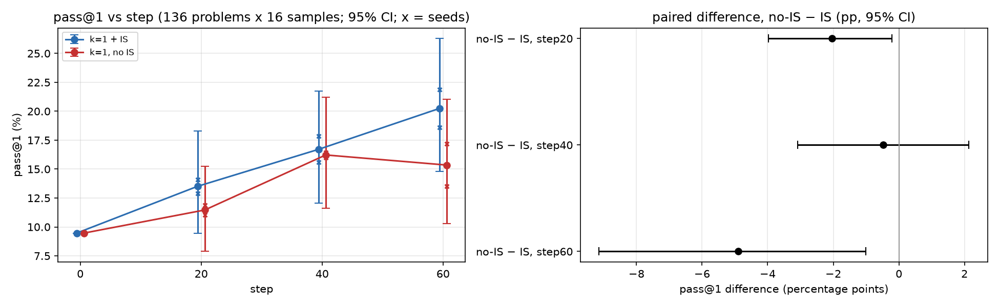
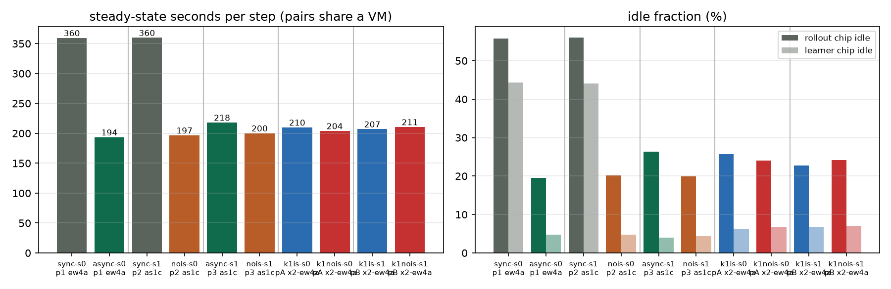
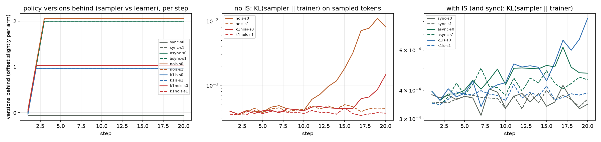
What we tested
- The training loop
- We fine-tune the model with GRPO (group relative policy optimization). For each of 16 problems per step it samples 8 answers. An answer earns reward 1 if its final \boxed{} answer matches exactly, else 0. Answers that beat their group's average are made more likely, and the rest less likely. Training problems are AIME 1983–2023. Each run uses two TPU chips: one runs the generator (vLLM, which samples answers) and one runs the learner (TorchTPU, which computes the update).
- Sync
- The two sides take turns. The generator samples a batch, the learner trains on it, the new weights are loaded into the generator, and only then does the next batch start. Each side waits while the other works.
- Async with lag k
- The generator keeps sampling while the learner trains. It may use weights up to k versions old, so batch b can start as soon as weights version b−k exist. Sync is the same code with k = 0.
- Lag 1 vs lag 2
- At lag 1 the generator can run one batch ahead of the learner; at lag 2, two. More lag means more overlap, but each batch is sampled by an older policy, which makes the data more "off-policy".
- IS (importance sampling) correction
- The learner recomputes each sampled token's probability under its current weights. It then reweights the token by the ratio of that probability to the probability under the policy that sampled it: w = min(exp(logp_current − logp_sampler), 2). The weight is truncated at 2 so that no single token can dominate. vLLM returns the sampler's log-probs for free, so the correction adds no compute.
- No IS
- The generator sends tokens only. The learner treats its own recomputed probabilities as the sampling ones (ratio ≡ 1), so no correction is applied, however stale the data is.
- pass@1 and the eval set
- pass@1 is the fraction of sampled answers that are correct, averaged over problems. The eval set has 136 problems (AIME 2024, 2025 and 2026; BRUMO 2025; HMMT Feb 2025 and 2026), with 16 samples per problem at temperature 0.6 and up to 6,144 tokens. The first study used a smaller set: 60 AIME 2024–2025 problems × 8 samples, up to 3,072 tokens.
- KL drift
- We track the KL divergence between the sampling policy (vLLM) and the learner's current policy, measured on the sampled tokens. Even sync runs sit at about 3.6e-4, because vLLM's fp8 KV cache and kernels differ numerically from the bf16 learner. A rise well above that floor means the learner is moving away from the policy that generated its data.
Round 1
First study: 40 steps, lag 2, 3,072 tokens
Sync vs async at lag 2 with IS, 2 seeds each, on one Flex-start v6e-4.
Async took 79.5 s/step against 128.1 s/step for sync, 1.61× faster. The generator's idle time fell from 39.5% to 1.7%. Here generation (76 s per batch) was the slow side and training (47 s) the fast one, so async hid the learner behind generation.
Step-40 pass@1 was 9.38% for sync and 8.96% for async (base 7.08%), a difference of −0.4 pp (95% CI −3.9 to +2.9). With answers capped at 3,072 tokens, the learning signal was weak, so this round shows speed clearly and accuracy only as "no detectable difference".
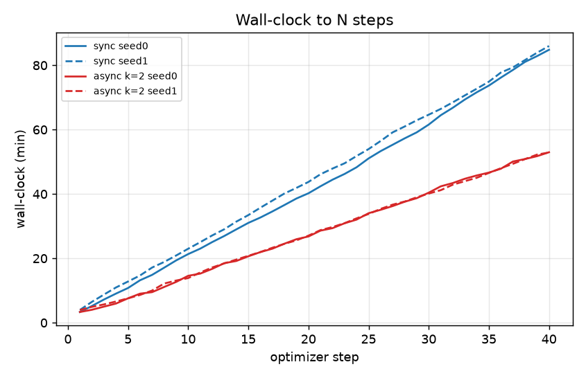
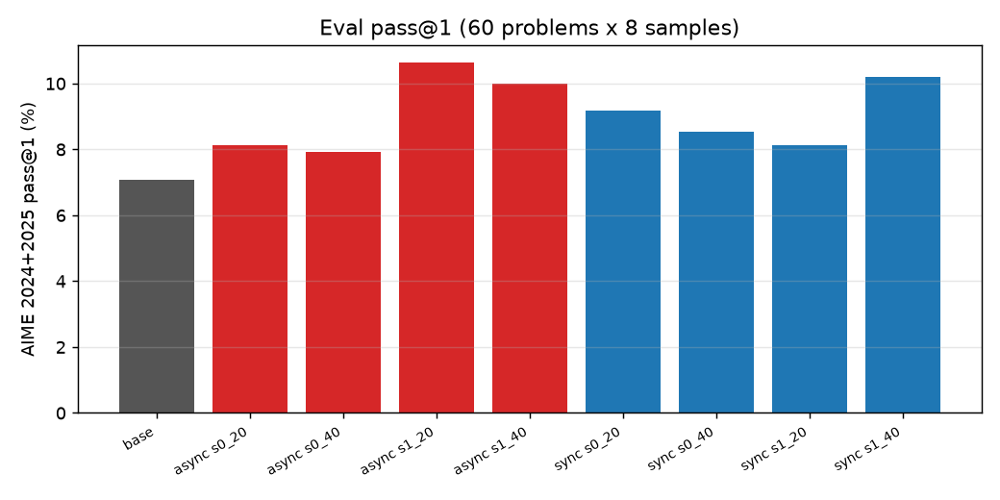
Round 2
20 steps at lag 2: sync vs async-IS vs no-IS
Three arms with 2 seeds each, 6,144-token answers, on two Spot v6e-4 VMs. Each VM ran two runs at once, so speed is compared within a VM.
| VM pair | Comparison | s/step | Ratio |
|---|---|---|---|
| p1 (europe-west4-a) | sync vs async-IS | 359.6 vs 193.5 | 1.86× |
| p2 (asia-south1-c) | sync vs no-IS | 360.0 vs 196.8 | 1.83× |
| p3 (asia-south1-c) | async-IS vs no-IS | 218.2 vs 200.3 | 1.09× |
With longer answers the learner became the bottleneck, and async still ran 1.86× faster than sync on the same VM. All three arms beat the base model, and async-IS is equivalent to sync within ±3 pp (+0.9 pp, 95% CI −1.0 to +2.9). Dropping IS cost no accuracy over 20 steps, but one of the two no-IS seeds began drifting from step 11: its KL grew 27× and its max IS ratio (logged, not applied) reached 26.6.
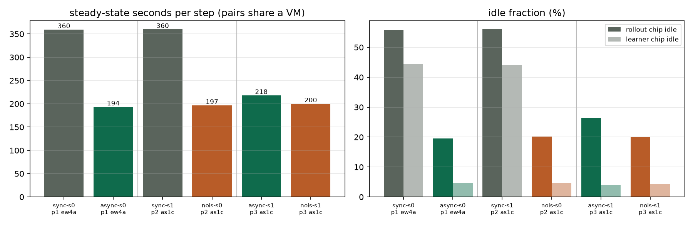
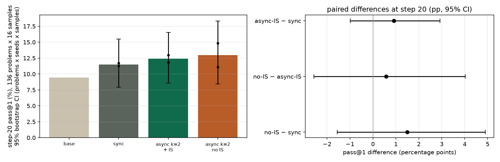
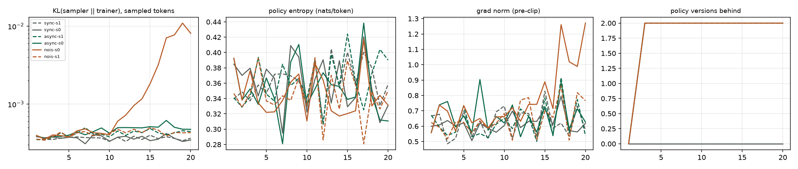
Round 3
20 steps at lag 1
The same setup at lag 1, with and without IS, 2 seeds each, on one Flex-start v6e-4.
Lag 1 is as fast as lag 2: the four runs took 204–211 s/step, inside the 193–218 s/step spread at lag 2. Lag 1 + IS is equivalent to lag 2 + IS within ±3 pp (+0.4 pp, 95% CI −2.4 to +3.2), and neither lag-1 arm differs detectably from sync. Lag 1 delayed the no-IS drift but did not stop it: the seed that drifted at lag 2 stayed flat through step 16, then rose to 1.5e-3 by step 20 (8.1e-3 at lag 2).
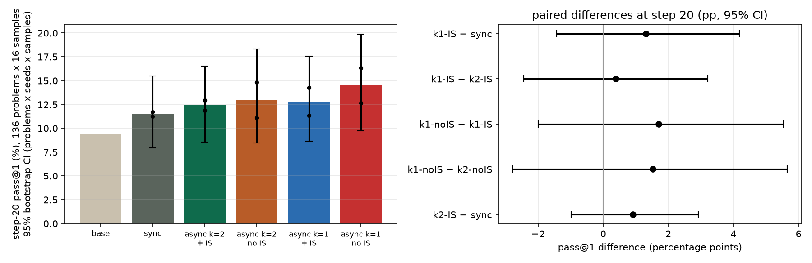
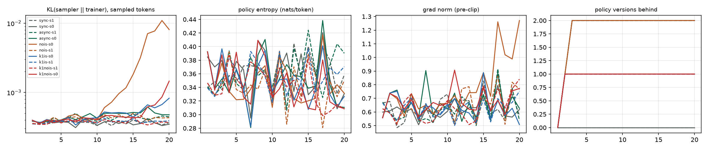
Round 4
60 steps at lag 1: IS vs no IS
The two lag-1 arms for 60 steps, 2 seeds each, on one Flex-start v6e-4, with evals at steps 20, 40 and 60.
| Arm | Step 20 | Step 40 | Step 60 |
|---|---|---|---|
| lag 1 + IS | 13.51% | 16.70% | 20.24% |
| lag 1, no IS | 11.47% | 16.22% | 15.35% |
| no IS − IS | −2.0 pp [−4.0, −0.2] | −0.5 pp [−3.1, +2.1] | −4.9 pp [−9.2, −1.0] |
Without IS the drift did not become instability. Both no-IS seeds had one KL excursion at steps 32–40 (peaks 4.6e-3 and 1.8e-3), recovered within about 5 steps, and went past the gradient clip on only 3 of 120 steps. But the no-IS arm plateaued after step 40, while the IS arm kept gaining, reaching +10.8 pp over base. Keep truncated IS.
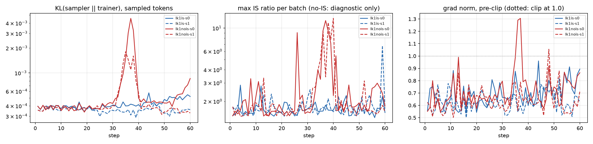
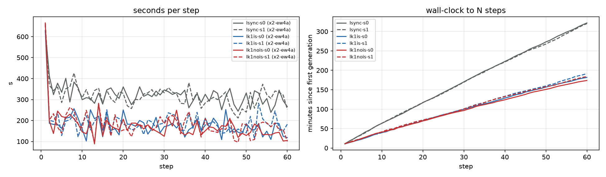
Details
Caveats
- Few seeds, short runs. Every arm has 2 seeds. Rounds 2 and 3 ran 20 steps; round 2 was planned for 60 and cut to 20 to fit its $90 cap. Even 60 steps is short: the IS arm was still improving at step 60.
- Run-to-run noise is larger than the bootstrap assumes. No-IS seed 0 scored 16.4% at step 20 in round 3 and 11.0% in round 4, from identical inputs. Read the step-60 contrast (−4.9 pp, same sign in both seeds) as strong evidence, not as a precise effect size.
- Drift is not tied to a seed. In round 3, no-IS seed 0 began drifting at step 17; in round 4 it was flat until step 31, and seed 1, which never drifted in 20 steps, drifted at steps 32–40.
- Truncation weakens the reward signal. 87% of base-model samples hit the 6,144-token cap in the pilot profile, and 67–75% of round-2 training rollouts were truncated and earned zero reward.
- Answer length is a confounder. By step 60, no-IS seed 0's eval answers averaged 2,601 tokens (14% truncated), against 5,258 tokens (73%) at step 40, and its pass@1 fell from 16.0% to 13.5%. IS seed 0 also shortened (4,492 tokens, 19% truncated) but gained accuracy (17.8% to 21.9%). The eval cannot tell "learned to be concise" from "learned to stop early".
- Speed across VMs. Round 2 ran on Spot VMs in two regions; rounds 3 and 4 on one Flex VM on other days. Speed is compared within a VM wherever possible. The lag-1 vs sync ratio (≈ 1.73×) crosses VMs. The two sync runs agreed to 0.1% across regions (359.6 vs 360.0 s/step), so the VM effect looks small.
- Async run-to-run noise. async-IS seed 1 was 9% slower than its no-IS partner on the same VM. IS adds no compute, and that run trained 4% more tokens, so treat 9% as the noise floor for async s/step.
- First study. Its zone was asia-northeast1-b because the preferred zones had no capacity. About 88% of samples hit the 3,072-token cap, and only 3–4 of 16 prompt groups per batch carried gradient. The eager learner ran at about 1,650 tok/s (about 3% MFU), because torch.compile failed on a view-stride error in Qwen3.5's Gated DeltaNet layers.
- Sampling seeds. vLLM on TorchTPU has no per-request seeds, so runs are reproducible only up to batch-scheduling nondeterminism.
Cost per round
| Round | Machines | VM-hours | Cost | Cap |
|---|---|---|---|---|
| 1. First study | Flex-start v6e-4, asia-northeast1-b, $5.40/h | 4.09 | ≈ $22.1 | $60 |
| 2. 20 steps, lag 2 (plan90) | Spot v6e-4: asia-south1-c $6.25/h, europe-west4-a $7.13/h | 5.65 + 3.76 | $64.08 | $90 |
| 3. 20 steps, lag 1 (plan25k1) | Flex-start v6e-4, europe-west4-a, $5.40/h | 3.89 | $21.45 | $25 |
| 4. 60 steps, lag 1 (plan65k1long) | Flex-start v6e-4, europe-west4-a, $5.40/h | 10.16 | $54.91 | $65 |
| Total | ≈ $162.5 |
Rounds 2–4 come from each round's GCS spend ledger. Create-to-delete times give $21.33 for round 3 and $54.89 for round 4. Capacity requests that were never granted cost $0. Everything was deleted except the compile-cache bucket (about $0.08/month).
- Round 1: setup, smoke tests, debugging and learner benchmarks ≈ $4.8; 4 training runs plus 9 eval passes ≈ $17.0. Per 40-step run on 2 chips: sync ≈ $3.9, async ≈ $2.5.
- Round 2: asia-south1-c VM $35.32 (pilot and base eval ≈ $8.3, OOM restart ≈ $0.9, pair p2 ≈ $14.4, pair p3 ≈ $11.7); europe-west4-a VM $26.79 (waiting for the pilot and the OOM restart ≈ $10.0, pair p1 ≈ $16.8); aborted early boots $0.98; GKE fallback cluster $0.97; CPU dry run $0.02.
- Round 3: Flex VM 3.89 h, $21.03 (setup ≈ $0.8, pair pA ≈ $9.9, pair pB ≈ $10.3); a Spot VM deleted by the budget guard before setup finished, $0.29.
- Round 4: Flex VM 10.16 h, $54.89 (setup ≈ $0.9, pair pA ≈ $25.6 over 4.73 h, pair pB ≈ $27.7 over 5.13 h, gaps and teardown ≈ $0.7). Each pair includes 60 steps plus 3 evals per run.
Methods
| Model | Qwen/Qwen3.5-2B, non-thinking chat template |
|---|---|
| Stack | Container vllm/vllm-torchtpu:v0.32.0: torch 2.13.0, torch_tpu 0.2.0, vllm 0.32.0, transformers 5.19.0, libtpu 0.0.50 |
| Layout | One v6e-4 (4 chips) per VM. Each run used 1 chip for vLLM and 1 for the learner; two runs shared a VM on chips 0/1 and 2/3, at the same time. |
| Data | Train: AIME 1983–2023 (gneubig/aime-1983-2024, 919 problems). Rounds 2–4 filter training prompts with a pilot profile: informative prompts plus 20% zero-pass prompts. |
| Algorithm | GRPO with group mean/std advantages, exact \boxed{} reward, no KL penalty, AdamW lr 1e-6 (constant), one optimizer step per batch. |
| Batch | 16 prompts × 8 samples = 128 sequences per step, temperature 1.0. Max new tokens 3,072 (round 1) or 6,144 (rounds 2–4). |
| Loss | Truncated IS, w = min(exp(logp_current − logp_behavior), 2), detached, loss −w·A·logp, token-mean over sequences with nonzero advantage. No-IS arms use --behavior-logprobs none (w ≡ 1). |
| Async rule | Batch b is trained at step b by policy version b; generation of batch b may start once version ≥ b−k is published. Lag is fixed with --staleness k --staleness-mode fixed. Weights go through safetensors on /dev/shm and are reloaded in place into vLLM in about 1.8 s. |
| Learner | bf16 params and grads on the TPU, fp32 master weights and AdamW on the host, gradient checkpointing, eager mode. Rounds 2–4 add --gdn-chunk 256 --mb-tokens 8192. The first round-2 attempt at --mb-tokens 16384 ran out of HBM on its first train step; only the restarts at 8,192 are reported. |
| Eval | Temperature 0.6, top-p 0.95. Round 1: 60 AIME 2024–2025 problems × 8 samples, steps 0/20/40. Rounds 2–3: 136 problems × 16 samples, step 20. Round 4: the same, steps 20/40/60. |
| Timing | Steady state, from the first generation to the last weight publish. Engine startup (about 125–130 s with a warm compile cache) is excluded. |
Statistics. 95% CIs come from a hierarchical bootstrap that resamples problems, seeds and samples (10,000 draws). Contrasts are paired by problem. "Equivalent at ±3 pp" is a two-one-sided test: the 90% CI lies inside ±3 pp.
Lag check. A CPU test confirmed the lag-1 flags: steps train at staleness 0, 1, 1, 1, …. Every lag-1 run trained at lag 1 on all but its first step; lag-2 runs were at lag 2 on 18 of 20 steps.
Detailed results: rounds 2 and 3 (20 steps)
Step-20 contrasts
| Contrast | Difference | 95% CI | 90% CI | Equivalent at ±3 pp? |
|---|---|---|---|---|
| async-IS − sync (lag 2) | +0.9 pp | [−1.0, +2.9] | [−0.7, +2.6] | yes |
| no-IS − async-IS (lag 2) | +0.6 pp | [−2.6, +4.0] | [−2.2, +3.5] | no (CI too wide) |
| no-IS − sync (lag 2) | +1.5 pp | [−1.6, +4.9] | [−1.2, +4.3] | no (CI too wide) |
| lag-1 IS − sync | +1.3 pp | [−1.4, +4.2] | [−1.0, +3.7] | no (CI too wide) |
| lag-1 IS − lag-2 IS | +0.4 pp | [−2.4, +3.2] | [−2.0, +2.8] | yes |
| lag-1 no-IS − lag-1 IS | +1.7 pp | [−2.0, +5.5] | [−1.4, +4.9] | no (CI too wide) |
| lag-1 no-IS − lag-2 no-IS | +1.5 pp | [−2.8, +5.7] | [−2.1, +5.0] | no (CI too wide) |
Gains over base (9.47%) at step 20: sync +2.0 pp [+0.2, +4.0], lag-2 IS +2.9 pp [+0.7, +5.1], lag-2 no-IS +3.5 pp [+0.4, +7.2], lag-1 IS +3.3 pp [+0.3, +6.5], lag-1 no-IS +5.0 pp [+1.7, +8.6]. Per seed (s0, s1): sync 11.72, 11.26; lag-2 IS 12.96, 11.86; lag-2 no-IS 14.84, 11.12; lag-1 IS 14.25, 11.35; lag-1 no-IS 16.36, 12.64.
Per run
| Run | Pair | Wall to 20 | s/step | Gen s/batch | Train s/step | Rollout idle | Learner idle | Rollouts truncated | Train reward 1–5 → 16–20 | Step-20 pass@1 |
|---|---|---|---|---|---|---|---|---|---|---|
| sync-s0 | p1 | 119.9 min | 359.6 | 157.6 | 197.3 | 55.7% | 44.3% | 71.7% | 0.222 → 0.273 | 11.72% |
| async-s0 | p1 | 64.5 min | 193.5 | 154.4 | 181.6 | 19.5% | 4.7% | 67.1% | 0.219 → 0.291 | 12.96% |
| sync-s1 | p2 | 120.0 min | 360.0 | 156.8 | 198.4 | 56.0% | 44.1% | 72.0% | 0.200 → 0.278 | 11.26% |
| no-IS-s0 | p2 | 65.6 min | 196.8 | 154.8 | 184.5 | 20.2% | 4.7% | 68.4% | 0.219 → 0.334 | 14.84% |
| async-s1 | p3 | 72.7 min | 218.2 | 159.3 | 206.5 | 26.4% | 4.0% | 74.0% | 0.186 → 0.277 | 11.86% |
| no-IS-s1 | p3 | 66.8 min | 200.3 | 158.9 | 188.6 | 20.0% | 4.4% | 75.4% | 0.208 → 0.272 | 11.12% |
| k1-IS-s0 | pA | 70.0 min | 210.0 | 154.5 | 193.9 | 25.7% | 6.3% | 64.5% | 0.227 → 0.350 | 14.25% |
| k1-noIS-s0 | pA | 68.0 min | 204.0 | 153.7 | 187.3 | 24.0% | 6.8% | 64.2% | 0.228 → 0.381 | 16.36% |
| k1-IS-s1 | pB | 69.0 min | 207.1 | 158.2 | 190.3 | 22.7% | 6.7% | 72.8% | 0.186 → 0.242 | 11.35% |
| k1-noIS-s1 | pB | 70.2 min | 210.7 | 157.4 | 192.9 | 24.2% | 7.1% | 70.5% | 0.197 → 0.295 | 12.64% |
Pairs p1–p3 are round 2 (lag 0 or 2); pA and pB are round 3 (lag 1). About 9 of 16 prompt groups per batch carried gradient (3.5 in round 1). Pooled across VMs, async-IS is 1.75× faster than sync (95% CI 1.65–1.86).
KL drift
| Run | KL steps 1–5 | KL steps 16–20 | Max KL (step) | Max IS ratio | Grad norm mean (max) |
|---|---|---|---|---|---|
| sync-s0 / s1 | 3.7e-4 / 3.6e-4 | 3.6e-4 / 3.6e-4 | – | 2.10 / 9.45 | 0.62 / 0.62 |
| lag-2 IS-s0 / s1 | 3.9e-4 / 3.8e-4 | 5.2e-4 / 4.3e-4 | 6.2e-4 (17) for s0 | 3.06 / 2.37 | 0.66 / 0.63 |
| lag-2 no-IS-s0 | 3.9e-4 | 7.4e-3 | 1.1e-2 (19) | 26.6 | 0.77 (1.27) |
| lag-2 no-IS-s1 | 3.8e-4 | 4.3e-4 | 5.0e-4 (15) | 2.54 | 0.65 |
| lag-1 IS-s0 | 3.9e-4 | 6.6e-4 | 8.2e-4 (20) | 3.02 | 0.63 (0.89) |
| lag-1 IS-s1 | 3.7e-4 | 3.8e-4 | 4.2e-4 (11) | 1.99 | 0.62 (0.75) |
| lag-1 no-IS-s0 | 3.8e-4 | 8.1e-4 | 1.5e-3 (20) | 3.33 | 0.67 (0.91) |
| lag-1 no-IS-s1 | 3.6e-4 | 3.6e-4 | 4.5e-4 (15) | 1.88 | 0.63 (0.84) |
For no-IS runs the IS ratio is a diagnostic only: computed, not applied. Lag-2 no-IS-s0's gradient norm passed the 1.0 clip on 3 of its last 5 steps. Learner idle is slightly higher at lag 1 (6–7% vs 4–5%) because the in-place weight load sits closer to the critical path.
Detailed results: round 4 (60 steps)
pass@1 with CIs
| Arm | Step 20 | Step 40 | Step 60 |
|---|---|---|---|
| lag 1 + IS | 13.51% [9.44, 18.29] | 16.70% [12.04, 21.76] | 20.24% [14.82, 26.29] |
| …seeds (s0, s1) | 14.11, 12.91 | 17.83, 15.58 | 21.88, 18.61 |
| …gain over base | +4.0 pp [+1.8, +6.5] | +7.2 pp [+4.4, +10.5] | +10.8 pp [+7.2, +14.9] |
| lag 1, no IS | 11.47% [7.88, 15.26] | 16.22% [11.60, 21.21] | 15.35% [10.29, 21.05] |
| …seeds (s0, s1) | 11.03, 11.90 | 15.99, 16.45 | 13.51, 17.19 |
| …gain over base | +2.0 pp [+0.1, +3.9] | +6.8 pp [+4.3, +9.5] | +5.9 pp [+2.3, +9.5] |
90% CIs for no IS − IS: [−3.7, −0.5] at step 20, [−2.7, +1.7] at step 40 (equivalent at ±3 pp), [−8.5, −1.6] at step 60. Per seed at step 60: −8.4 pp (seed 0), −1.4 pp (seed 1).
Stability per run
| Run | KL 1–10 | 11–20 | 21–40 | 41–60 | Max KL (step) | KL at 60 | Max IS ratio (step) | Clip hits / 60 | Max grad norm | Entropy 1–10 → 41–60 | Train reward 1–10 → 41–60 |
|---|---|---|---|---|---|---|---|---|---|---|---|
| lk1is-s0 | 3.8e-4 | 3.9e-4 | 3.9e-4 | 4.7e-4 | 5.7e-4 (44) | 5.2e-4 | 2.85 (4) | 0 | 0.96 | 0.361 → 0.382 | 0.252 → 0.499 |
| lk1is-s1 | 3.7e-4 | 3.7e-4 | 3.4e-4 | 3.6e-4 | 4.2e-4 (46) | 3.6e-4 | 6.80 (59) | 0 | 0.82 | 0.351 → 0.256 | 0.216 → 0.416 |
| lk1nois-s0 | 3.8e-4 | 3.7e-4 | 1.0e-3 | 5.1e-4 | 4.6e-3 (37) | 8.6e-4 | 11.8 (37) | 2 (36, 37) | 1.31 | 0.358 → 0.282 | 0.234 → 0.432 |
| lk1nois-s1 | 3.7e-4 | 3.8e-4 | 7.1e-4 | 3.6e-4 | 1.8e-3 (35) | 3.3e-4 | 12.4 (40) | 1 (48) | 1.05 | 0.353 → 0.291 | 0.235 → 0.449 |
A clip hit is a step whose pre-clip gradient norm exceeded 1.0. Over its last 8 steps lk1nois-s0's KL climbed again, from 3.9e-4 to 8.6e-4.
Answer length
| Run | Train truncated 1–10 → 21–40 → 51–60 | Tokens/seq 1–10 → 51–60 | Eval truncated, tokens at 20 / 40 / 60 |
|---|---|---|---|
| lk1is-s0 | 73% → 43% → 18% | 5,326 → 4,042 | 71%, 5,304 / 57%, 5,126 / 19%, 4,492 |
| lk1is-s1 | 78% → 56% → 55% | 5,463 → 5,032 | 77%, 5,418 / 73%, 5,387 / 71%, 5,448 |
| lk1nois-s0 | 73% → 49% → 21% | 5,359 → 3,394 | 73%, 5,301 / 73%, 5,258 / 14%, 2,601 |
| lk1nois-s1 | 75% → 52% → 37% | 5,442 → 3,974 | 76%, 5,377 / 71%, 5,174 / 62%, 4,926 |
Speed
| Arm | s/step, mean (seeds) | Steps 1–10 | 11–20 | 21–40 | 41–60 | Gen s/batch | Train s/step | Rollout idle | Learner idle |
|---|---|---|---|---|---|---|---|---|---|
| lag 1 + IS | 186.6 (181.8, 191.5) | 236–239 | 184–193 | 174–184 | 160–175 | 147.6 | 176.4 | 20.0% | 3.8% |
| lag 1, no IS | 178.8 (173.8, 183.8) | 245–249 | 173–183 | 164–181 | 149–154 | 143.4 | 167.0 | 18.6% | 4.6% |
Every run trained at lag 1 on 59 of 60 steps. Within each pair the no-IS run was about 4% faster because it trained fewer tokens per step (293–299k vs 322–339k over steps 41–60).
Step-20 replication vs round 3
| Arm | Round 3 | Round 4 | Difference (95% CI) |
|---|---|---|---|
| lag 1 + IS | 12.80% (14.25, 11.35) | 13.51% (14.11, 12.91) | +0.7 pp [−2.1, +3.6] |
| lag 1, no IS | 14.50% (16.36, 12.64) | 11.47% (11.03, 11.90) | −3.0 pp [−6.3, 0.0] |
Detailed results: round 1 (first study)
| Run | Wall to 40 | s/step | Gen tok/s | Rollout idle | Learner idle | Gen s/batch | Train s/step |
|---|---|---|---|---|---|---|---|
| sync seed0 | 84.8 min | 127.2 | 2,916 | 39.3% | 60.7% | 75.7 | 47.2 |
| sync seed1 | 86.0 min | 129.0 | 2,888 | 39.8% | 60.1% | 75.9 | 48.5 |
| async k=2 seed0 | 53.0 min | 79.5 | 4,712 | 1.8% | 39.4% | 76.5 | 44.4 |
| async k=2 seed1 | 52.9 min | 79.4 | 4,683 | 1.6% | 33.4% | 76.3 | 49.7 |
| Checkpoint | pass@1 | AIME 2024 | AIME 2025 | Truncated |
|---|---|---|---|---|
| base | 7.08% | 5.00% | 9.17% | 87.7% |
| sync s0 step 20 / 40 | 9.17% / 8.54% | 7.50% / 5.42% | 10.83% / 11.67% | 82% / 80% |
| sync s1 step 20 / 40 | 8.13% / 10.21% | 4.58% / 9.58% | 11.67% / 10.83% | 84% / 69% |
| async s0 step 20 / 40 | 8.13% / 7.92% | 6.25% / 7.08% | 10.00% / 8.75% | 85% / 77% |
| async s1 step 20 / 40 | 10.63% / 10.00% | 10.00% / 7.08% | 11.25% / 12.92% | 80% / 75% |
Mean of 2 seeds: sync 8.65% / 9.38%, async 9.38% / 8.96% at steps 20 / 40. async − sync: +0.7 pp at step 20 (−2.8 to +4.7), −0.4 pp at step 40 (−3.9 to +2.9). Trained − base: +1.9 pp at step 20 (−0.1 to +4.1), +2.1 pp at step 40 (−0.2 to +4.5).
Mean staleness was 1.10 and 1.07 for the two async seeds (cap 2). The sampler-vs-learner KL was the same in sync and async (3.4–3.7e-4), so that floor comes from numerics, not lag.
Secondary charts
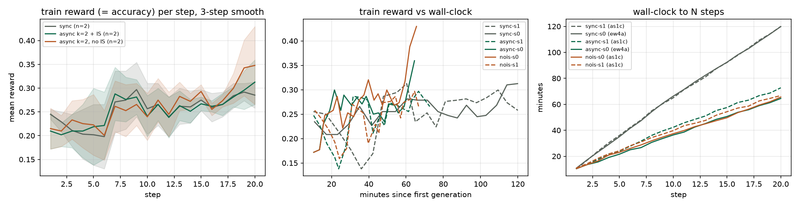
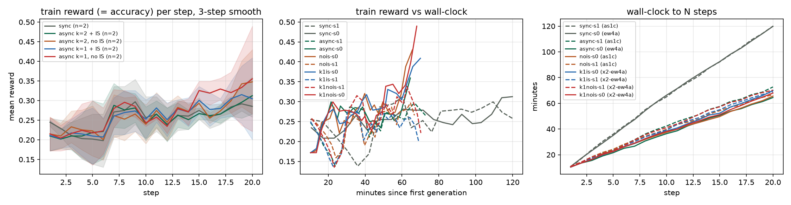
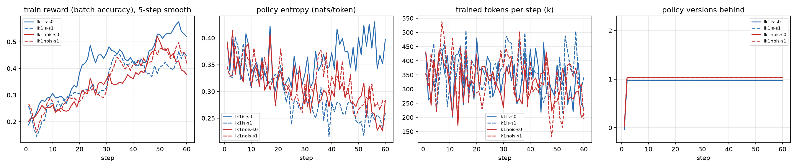
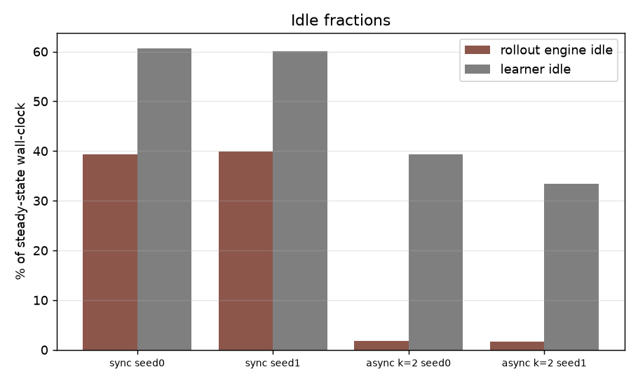
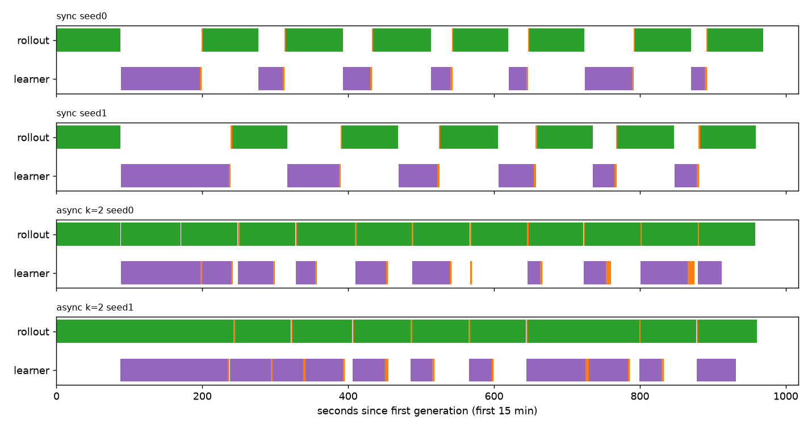
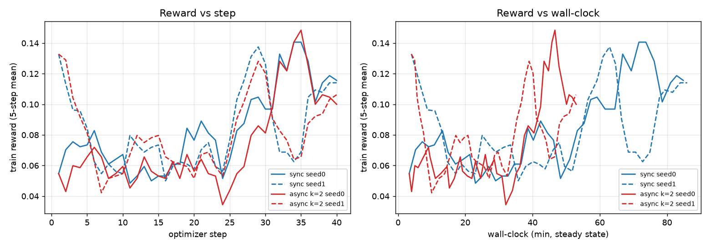
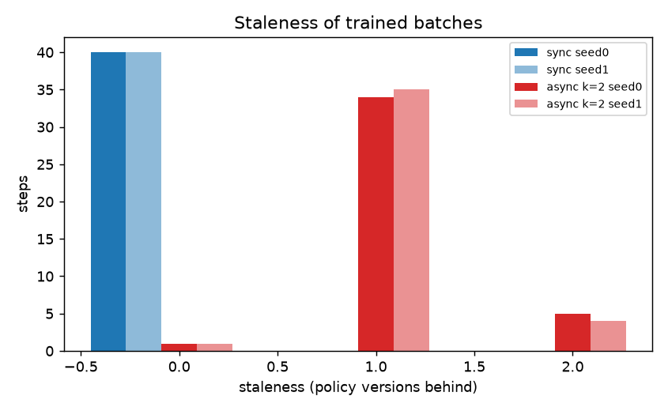
Provenance and reproduction
- Code: branch cursor/qwen38-async-vs-sync-rl-bc4a, under rl/ (qrl/ for rollout, learner, eval, analysis and stats; rl/tpu/ for drivers).
- Round 1: results commit 2cea2a9; data in rl/results/qwen35-2b-aime/. Flex-start v6e-4 ct6e-standard-4t, asia-northeast1-b.
- Round 2 (plan90): results commit df381ca; data in rl/results/plan90/. VMs qrl-bc4a-s-ew4a (europe-west4-a, pair p1) and qrl-bc4a-s-as1c (asia-south1-c, pairs p2 then p3). Analysis: qrl.report_plan90.
- Round 3 (plan25k1): results commit 2f9ce9b; data in rl/results/plan25k1/. VM qrl-bc4a-x2-ew4a (europe-west4-a). Analysis: qrl.report_plan25k1.
- Round 4 (plan65k1long): results commit 5c22a8e; data in rl/results/plan65k1long/. VM qrl-bc4a-x2-ew4a (europe-west4-a). Analysis: qrl.report_long.
- Cleanup: every qrl-bc4a-* VM, queued request, GKE cluster, Cloud Run job and Scheduler job was deleted after each round. Only the compile-cache bucket gs://qrl-bc4a-compile-cache-tpu-builders-509006 is kept.
# on a v6e-4 VM with the vllm/vllm-torchtpu:v0.32.0 container named `qrl`
bash rl/tpu/launch_pair.sh 0 40 # sync on chips 0/1, async k=2 on chips 2/3
bash rl/tpu/chain.sh sync 40 & bash rl/tpu/chain.sh async 40 &
python -m qrl.analyze <run dirs>
python -m qrl.plots --runs <run dirs> --evals <eval jsons> --out <dir>Related work
- Miles — Yuan, Yueming. "Miles: RL post-training for the new era of scale and workloads." PyTorch Conference 2026. Slides · Blog
- TorchStore — Pasqualin, Pintz, Wang, Afzali. "TorchStore: What We Learned Building Distributed Storage Solutions for AsyncRL." PyTorch Conference Europe 2026. Session · GitHub
- torchforge — PyTorch Blog, 23 Oct 2025. Post
- HF AsyncGRPO — AsyncGRPOTrainer in huggingface/trl: background vLLM rollouts with a staleness bound and behavior log-probs.
This study is a small, instrumented A/B of the same idea on one TPU host: overlap generation and training with bounded staleness, and correct with behavior log-probs.